Categorical, or qualitative, data are pieces of information that allow us to classify the objects under investigation into various categories. We usually begin working with categorical data by summarizing the data into a frequency table.
Definition7.1.1.Frequency Table.
A frequency table is a table with two columns. One column lists the categories, and another for the frequencies with which the items in the categories occur (how many items fit into each category).
Example7.1.2.
An insurance company determines vehicle insurance premiums based on known risk factors. If a person is considered a higher risk, their premiums will be higher. One potential factor is the color of your car. The insurance company believes that people with some color cars are more likely to get in accidents. To research this, they examine police reports for recent total-loss collisions. The data is summarized in the frequency table below.
Table7.1.3.
Color
Frequency
Blue
25
Green
52
Red
41
White
36
Black
39
Grey
23
Sometimes we need an even more intuitive way of displaying data. This is where charts and graphs come in. There are many, many ways of displaying data graphically, but we will concentrate on one very useful type of graph called a bar graph. In this section we will work with bar graphs that display categorical data; the next section will be devoted to bar graphs that display quantitative data.
Definition7.1.4.Bar graph.
A bar graph is a graph that displays a bar for each category with the length of each bar indicating the frequency of that category.
To construct a bar graph, we need to draw a vertical axis and a horizontal axis. The vertical direction will have a scale and measure the frequency of each category; the horizontal axis has no scale in this instance. The construction of a bar chart is most easily described by use of an example.
Example7.1.5.
Using our car data from above, note the highest frequency is 52, so our vertical axis needs to go from 0 to 52, but we might as well use 0 to 55, so that we can put a hash mark every 5 units:
Figure7.1.6.Image Credit: RRCC
Notice that the height of each bar is determined by the frequency of the corresponding color. The horizontal gridlines are a nice touch, but not necessary. In practice, you will find it useful to draw bar graphs using graph paper, so the gridlines will already be in place, or using technology. Instead of gridlines, we might also list the frequencies at the top of each bar, like this:
Figure7.1.7.Image Credit: RRCC
In this case, our chart might benefit from being reordered from largest to smallest frequency values. This arrangement can make it easier to compare similar values in the chart, even without gridlines. When we arrange the categories in decreasing frequency order like this, it is called a Pareto chart.
Definition7.1.8.Pareto chart.
A Pareto chart is a bar graph ordered from highest to lowest frequency.
Example7.1.9.
Transforming our bar graph from earlier into a Pareto chart, we get:
Figure7.1.10.Image Credit: RRCC
Example7.1.11.
In a survey, adults were asked whether they personally worried about a variety of environmental concerns. The numbers (out of 1012 surveyed) who indicated that they worried “a great deal” about some selected concerns are summarized below. Create a bar graph to illustrate this data.
This data could be shown graphically in a bar graph:
Figure7.1.13.Image Credit: RRCC
To show relative sizes, it is common to use a pie chart.
Definition7.1.14.Pie Chart.
A pie chart is a circle with wedges cut of varying sizes marked out like slices of pie or pizza. The relative sizes of the wedges correspond to the relative frequencies of the categories.
Example7.1.15.
For our vehicle color data, a pie chart might look like this:
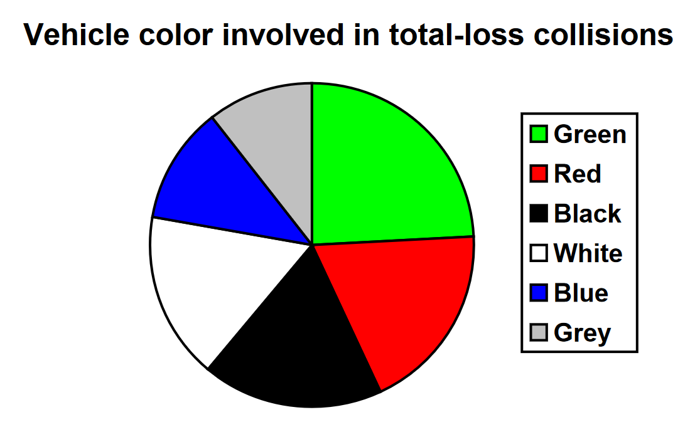
Pie charts can often benefit from including frequencies or relative frequencies (percents) in the chart next to the pie slices. Often having the category names next to the pie slices also makes the chart clearer.
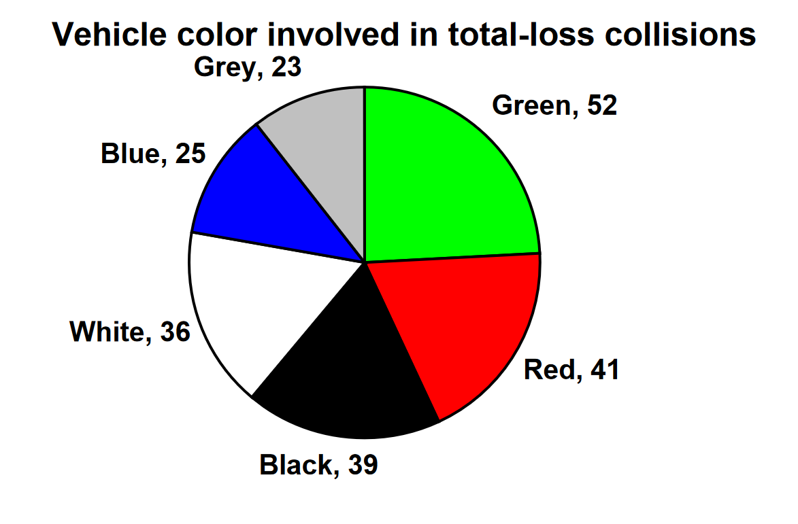
Example7.1.16.
The pie chart to the right shows the percentage of voters supporting each candidate running for a local senate seat.
If there are 20,000 voters in the district, the pie chart shows that about 11% of those, about 2,200 voters, support Reeves.
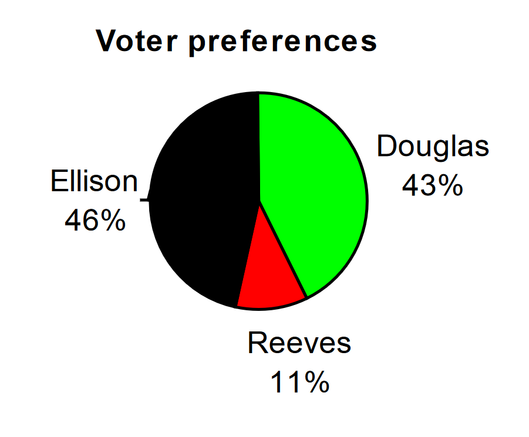
Pie charts look nice, but are harder to draw by hand than bar charts since to draw them accurately we would need to compute the angle each wedge cuts out of the circle, then measure the angle with a protractor. Computers are much better suited to drawing pie charts. Common software programs like Microsoft Word or Excel, OpenOffice.org Write or Calc, or Google Docs are able to create bar graphs, pie charts, and other graph types. There are also numerous online tools that can create graphs.
Problem7.1.17.Try It Now.
Create a bar graph and a pie chart to illustrate the grades on a history exam below.
Don’t get fancy with graphs! People sometimes add features to graphs that don’t help to convey their information. For example, 3-dimensional bar charts like the one shown below are usually not as effective as their two- dimensional counterparts.
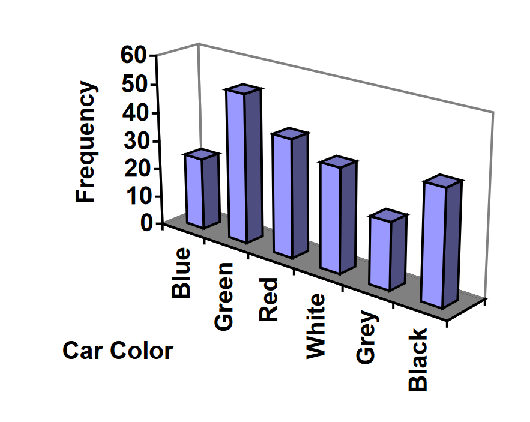
Here is another way that fanciness can lead to trouble. Instead of plain bars, it is tempting to substitute meaningful images. This type of graph is called a pictogram.
A pictogram is a statistical graphic in which the size of the picture is intended to represent the frequencies or size of the values being represented.
Example7.1.18.
A labor union might produce the graph to show the difference between the average manager salary and the average worker salary.
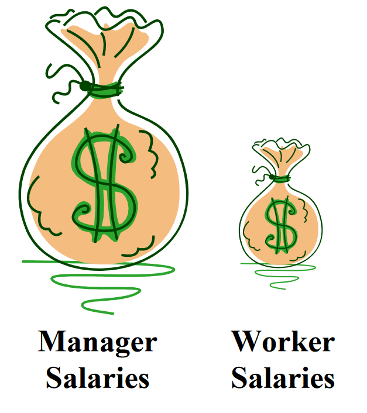
Looking at the picture, it would be reasonable to guess that the manager salaries is 4 times as large as the worker salaries - the area of the bag looks about 4 times as large. However, the manager salaries are in fact only twice as large as worker salaries, which were reflected in the picture by making the manager bag twice as tall.
Another distortion in bar charts results from setting the baseline to a value other than zero. The baseline is the bottom of the vertical axis, representing the least number of cases that could have occurred in a category. Normally, this number should be zero.
Example7.1.19.
Compare the two graphs below showing support for same-sex marriage rights from a poll taken in December 2008. The difference in the vertical scale on the first graph suggests a different story than the true differences in percentages; the second graph makes it look like twice as many people oppose marriage rights as support it.
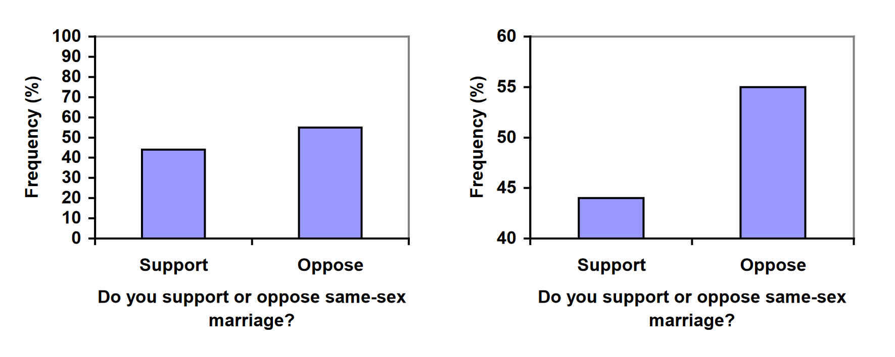
Problem7.1.20.Try It Now.
A poll was taken asking people if they agreed with the positions of the 4 candidates for a county office. Does the pie chart present a good representation of this data? Explain.
While the pie chart accurately depicts the relative size of the people agreeing with each candidate, the chart is confusing, since usually percents on a pie chart represent the percentage of the pie the slice represents.
Quantitative, or numerical, data can also be summarized into frequency tables.
Example7.1.21.
A teacher records scores on a 20-point quiz for the 30 students in his class. The scores are:
19 20 18 18 17 18 19 17 20 18 20 16 20 15 17
12 18 19 18 19 17 20 18 16 15 18 20 5 0 0
These scores could be summarized into a frequency table by grouping like values:
Table7.1.22.
Score
Frequency
0
2
5
1
12
1
15
2
16
2
17
4
18
8
19
4
20
6
Using this table, it would be possible to create a standard bar chart from this summary, like we did for categorical data:
Figure7.1.23.Image Credit: RRCC
However, since the scores are numerical values, this chart doesn’t really make sense; the first and second bars are five values apart, while the later bars are only one value apart. It would be more correct to treat the horizontal axis as a number line. This type of graph is called a histogram.
Definition7.1.24.Histogram.
A histogram is like a bar graph, but where the horizontal axis is a number line
Example7.1.25.
For the values above, a histogram would look like:
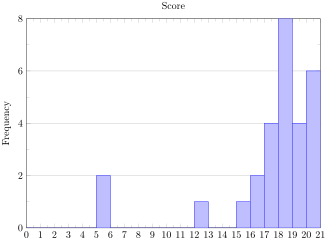
Figure7.1.26.Image Credit: RRCC
Notice that in the histogram, a bar represents values on the horizontal axis from that on the left hand-side of the bar up to, but not including, the value on the right hand side of the bar. Some people choose to have bars start at \(\frac{1}{2}\) values to avoid this ambiguity.
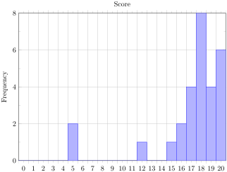
Figure7.1.27.Image Credit: RRCC
Unfortunately, not a lot of common software packages can correctly graph a histogram. About the best you can do in Excel or Word is a bar graph with no gap between the bars and spacing added to simulate a numerical horizontal axis.
If we have a large number of widely varying data values, creating a frequency table that lists every possible value as a category would lead to an exceptionally long frequency table, and probably would not reveal any patterns. For this reason, it is common with quantitative data to group data into class intervals.
Definition7.1.28.Class Intervals.
Class intervals are groupings of the data. In general, we define class intervals so that:
Each interval is equal in size. For example, if the first class contains values from 120-129, the second class should include values from 130-139.
We have somewhere between 5 and 20 classes, typically, depending upon the number of data we’re working with.
Example7.1.29.
Suppose that we have collected weights from 100 male subjects as part of a nutrition study. For our weight data, we have values ranging from a low of 121 pounds to a high of 263 pounds, giving a total span of 263-121 = 142. We could create 7 intervals with a width of around 20, 14 intervals with a width of around 10, or somewhere in between. Often time we have to experiment with a few possibilities to find something that represents the data well. Let us try using an interval width of 15. We could start at 121, or at 120 since it is a nice round number.
Table7.1.30.
Interval
Frequency
120 - 134
4
135 - 149
14
150 - 164
16
165 - 179
28
180 - 194
12
195 - 209
8
210 - 224
7
225 - 239
6
240 - 254
2
255 - 269
3
A histogram of this data would look like:
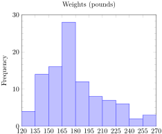
Figure7.1.31.Image Credit: RRCC
Other graph types such as pie charts are possible for quantitative data. The usefulness of different graph types will vary depending upon the number of intervals and the type of data being represented. For example, a pie chart of our weight data is difficult to read because of the quantity of intervals we used.
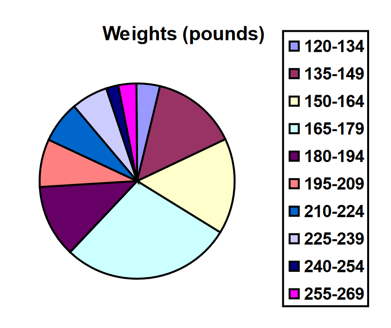
Problem7.1.32.Try It Now.
The total cost of textbooks for the term was collected from 36 students. Create a histogram for this data.
Using a class intervals of size 55, we can group our data into six intervals:
Table7.1.33.
Cost Interval
Frequency
$140 - 194
5
$195 - 249
3
$250 - 304
9
$305 - 359
12
$360 - 414
4
$415 - 469
3
We can use the frequency distribution to generate the histogram.
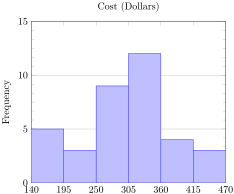
Figure7.1.34.Image Credit: RRCC
When collecting data to compare two groups, it is desirable to create a graph that compares quantities.
Example7.1.35.
The data below came from a task in which the goal is to move a computer mouse to a target on the screen as fast as possible. On 20 of the trials, the target was a small rectangle; on the other 20, the target was a large rectangle. Time to reach the target was recorded on each trial.
Table7.1.36.
Interval (milliseconds)
Frequency, Small Target
Frequency, Large Target
300 - 399
0
0
400 - 499
1
5
500 - 599
3
10
600 - 699
6
5
700 - 799
5
0
800 - 899
4
0
900 - 999
0
0
1000 - 1099
1
0
1100 - 1199
0
0
One option to represent this data would be a comparative histogram or bar chart, in which bars for the small target group and large target group are placed next to each other.
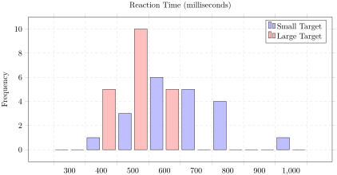
Figure7.1.37.Image Credit: RRCC
Definition7.1.38.Frequency Polygon.
An alternative representation is a frequency polygon. A frequency polygon starts out like a histogram, but instead of drawing a bar, a point is placed in the midpoint of each interval at height equal to the frequency. Typically the points are connected with straight lines to emphasize the distribution of the data.
Example7.1.39.
This graph makes it easier to see that reaction times were generally shorter for the larger target, and that the reaction times for the smaller target were more spread out.